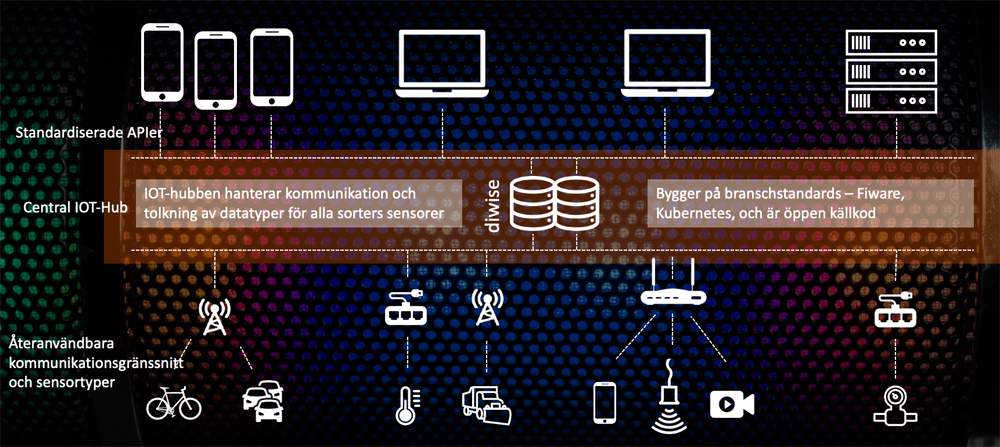
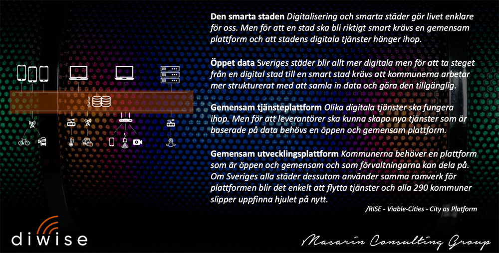

diwise
Om sakerna omkring dig kunde prata, vad skulle de säga?
Det är frågan som möter besökaren på IoT Sveriges webbplats. Det är en spännande fråga som väcker många tankar såväl som idéer. Men det finns också några intressanta följdfrågor, som vad du skulle göra med informationen, hur du skulle vilja svara tillbaka och vilken nytta du vill skapa för din verksamhet och dina kunder eller brukare.
Sensordriven utveckling av verksamheter och samhällsfunktioner har förutsättningar att skapa många nyttiga funktioner och bidra med starka effekter till digitaliseringsmålen. Antalet installerade smarta sensorer ökar snabbt och antalet applikationer som använder dess data växer.
Många organisationer, offentliga såväl som privata, står i startgroparna för att använda möjligheterna med Internet of Things – för att utveckla sin verksamhet, skapa större kundnytta och öka värdet på sina tjänster till brukare.
Det finns många fällor att ramla ner i på vägen
- I takt med att försöksprojekten levererar funktionalitet och i takt med att dessa försök börjar leverera verklig nytta till användare och kunder i vardagen ökar risken för inlåsningar och isolerade öar av funktionalitet och data.
- Utan en i förväg genomtänkt strategi för hur den slutliga plattformen ska stödja verksamheten på sikt slutar arbetet med ett antal stuprör som har svårt att kommunicera med varandra och information som är svår att dela på.
- De verksamhetssystem som byggs upp inom respektive isolerat område behöver dessutom ha funktionalitet för att hantera alla former av kommunikation och alla typer av sensorer.
- Med olika projektgrupper och leverantörer som arbetar med olika system på olika ställen i organisationen är silos oundvikliga, om inte projekten kan enas om och samarbeta kring en gemensam plattform och infrastruktur.
Plattform

IoT-kommunikationsplattform
diwise är en IoT-kommunikationsplattform för att ta emot sensordata och reglera fysiska styrsystem som innebär att verksamhetssystem frikopplas från både kommunikationsgränssnitt och olika sensortyper.
Standardiserade API'er
De användarnära applikationerna kan använda standardiserade APIer för att komma åt sensordata utan att exponeras för den komplexitet som uppstår i kombinationen av LoRa, WiFi, 4G, NB-IoT med den uppsjö av sensorer i form av givare, mätare, brytare, kameror m.fl. som kan kopplas upp på nätet idag.
Driva verksamhetens processer
Med möjligheten att använda soft sensors, signaler som genereras av olika styrprogram istället för fysiska sensorer, skapas oändliga möjligheter att generera styrdata som kan driva verksamhetens många olika processer.
En gemensam plattform för den smarta staden
Just det här med öppenheten är en central del av vårt arbete med diwise. Smarta städer behöver gemensamma plattformar som kan kommunicera. Det samhällsdata som genereras behöver tillgängliggöras i större utsträckning, både för användning inom stadens organisationer och mellan organisationerna. Leverantörer och entreprenörer behöver komma åt det öppna data som genereras i staden, och då behövs en gemensam öppen plattform med överenskomna gränssnitt. Och för att inte bli inlåst i en gammal version av ett system utan möjlighet till utveckling och anpassning, som ju så många organisationer drabbas av idag, så behövs också en gemensam öppen utvecklingsplattform som gör att ny funktionalitet kommer alla till godo. Och vår ambition är att diwise ska bli just en gemensam öppen utvecklingsplattform.

Gemensamma standarder
Vi samarbetar med projektet City as a Platform som drivs av RISE. Projektet samlar ett antal Svenska städer som har börjat testa uppkopplade sensorer och internet of things (IoT) för att förstå hur de kan använda sig av data för att till exempel effektivisera befintliga processer, få bättre överblick och generera bredare beslutsunderlag samt erbjuda invånarna optimerade tjänster. diwise har ambitionen att bli en gemensam och delad plattform för utveckling av samhällsnyttig infrastruktur.
Rise har skapat en informativ och sevärd film om hur de tänker sig att en smart stad behöver samverka för att bli effektiv. Det bygger på gemensamma standarder och gemensamma plattformar för att kunna utbyta information inom staden och mellan städer. Det är en spännande möjlighet som vi vill vara en del av.
Det finns många standarder att vara uppmärksam på och att följa. En av dem är Fiware som beskriver ett standardiserat sätt att paketera och förmedla information.
diwise följer Fiwares standard för att göra det lätt att kommunicera mellan olika system och plattformar.
Öppen källkod
diwise är licensierat som öppen källkod (AGPL-3.0) för att möjliggöra en så transparent och flexibel utveckling som möjligt. Öppen programvara möjliggör för offentlig sektor att byte av leverantör kan ske med bevarandet av både funktionalitet och lagrat data. Den ökade insynen och transparensen innebär att säkerhetsrisker kan minskas.
Öppen programvara innebär också möjligheter för alla användare av plattformen att utveckla ny funktionalitet och anpassa efter egna , och där alla kan ta del av det nya som skapats. Nya funktioner och förbättringar delas med alla i ett gemensamt samverkande ekosystem.
diwise är utvecklat av Masarin Consulting och inte public code (publiccode.eu) enligt dess fulla definition men med ambitionen att erbjuda liknande möjligheter för kommuner, regioner och myndigheter. diwise är en fantastisk möjlighet att se på utveckling av gemensam infrastruktur på ett nytt sätt.